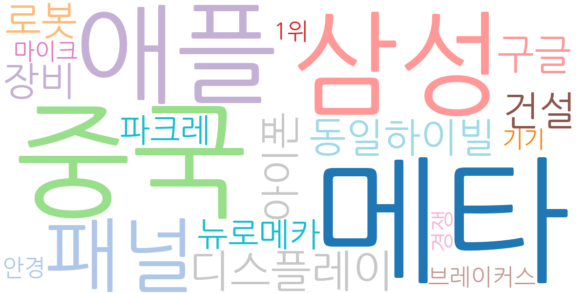
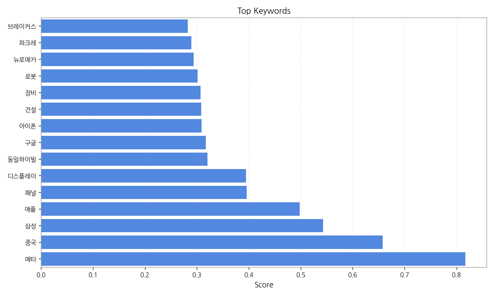
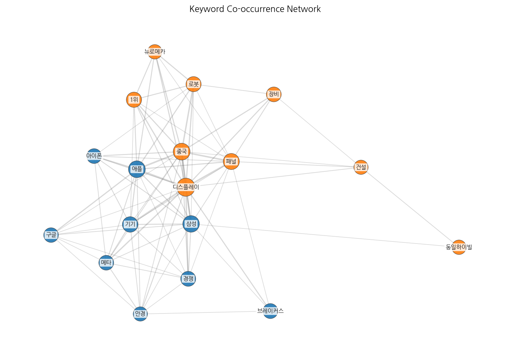
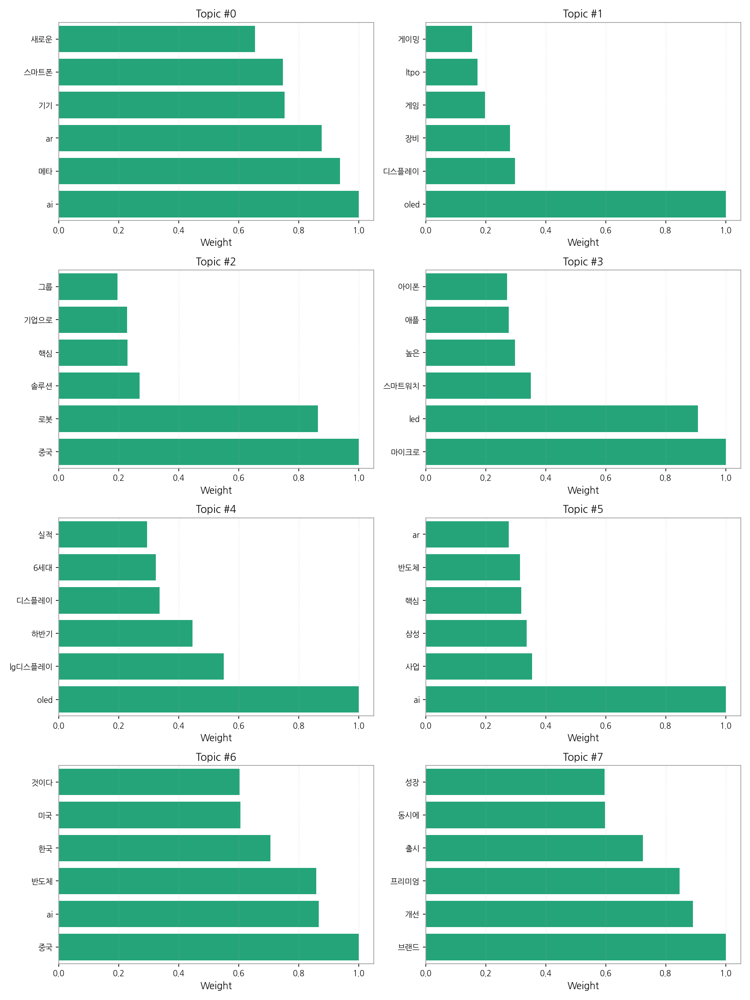

1. 핵심 맥락:
2. 최근 변화/스파이크:
3. 실무 인사이트:

| Rank | Keyword | Score |
|---|---|---|
| 1 | 메타 | 0.817 |
| 2 | 중국 | 0.657 |
| 3 | 삼성 | 0.543 |
| 4 | 애플 | 0.498 |
| 5 | 패널 | 0.396 |
| 6 | 디스플레이 | 0.394 |
| 7 | 동일하이빌 | 0.320 |
| 8 | 구글 | 0.317 |
| 9 | 아이폰 | 0.309 |
| 10 | 건설 | 0.308 |
| 11 | 장비 | 0.307 |
| 12 | 로봇 | 0.301 |
| 13 | 뉴로메카 | 0.294 |
| 14 | 파크레 | 0.289 |
| 15 | 브레이커스 | 0.282 |



1. 핵심 맥락:
2. 최근 변화/스파이크:
3. 실무 인사이트:
| Idea | Target | Value Prop | Score |
|---|---|---|---|
| 초고해상도 마이크로 OLED 기반 AR 글래스용 디스플레이 모듈 | 북미 빅테크 기업 (AR/VR 기기 제조사) | 기존 대비 2배 이상 높은 해상도와 밝기를 제공하여 몰입감 있는 AR 경험 제공, 초소형, 초경량 디자인으로 착용감 개선, 저전력 기술 적용으로 사용 시간 증대 | 4.50 |
| AI 기반 개인 맞춤형 차량용 HUD 솔루션 | 글로벌 완성차 OEM (프리미엄 브랜드 중심) | AI 기반 실시간 운전 환경 분석 및 운전자 맞춤형 정보 제공으로 안전성 및 편의성 극대화, AR/VR 기술 연동을 통한 몰입형 운전 경험 제공 | 4.20 |
| AI 기반 디스플레이 공정 자동화 및 수율 개선 솔루션 | 글로벌 디스플레이 제조사 (OLED, LCD) | AI 기반 실시간 공정 데이터 분석 및 예측, 자동 불량 검출 및 원인 분석, 최적 공정 조건 자동 설정, 생산성 향상 및 원가 절감 | 4.00 |
| IT 기기용 플렉서블 OLED 기반 폴더블/롤러블 디스플레이 솔루션 | 글로벌 스마트폰 제조사 (삼성, 애플 등) | 기존 대비 얇고 가벼운 플렉서블 OLED 패널 제공, 뛰어난 내구성과 유연성 확보, 다양한 폼팩터 디자인 지원, 저전력 기술 적용으로 배터리 효율 증대 | 3.80 |
| 퀀텀닷 컬러 필터 기반 고색재현율 LCD 솔루션 | 글로벌 IT 기기 제조사 (게이밍 모니터, 전문가용 디스플레이) | 기존 대비 넓은 색 영역과 높은 명암비 제공, 뛰어난 시야각 확보, 저전력 기술 적용으로 에너지 효율 증대, OLED 대비 가격 경쟁력 확보 | 3.50 |